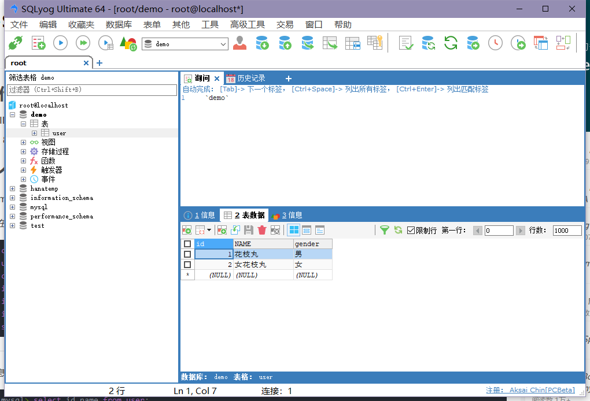
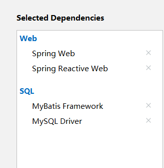
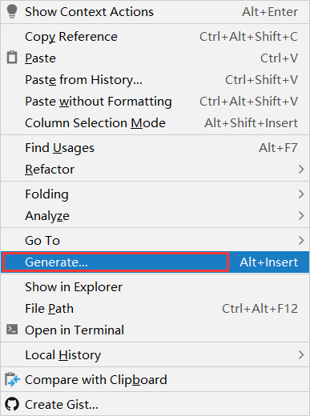
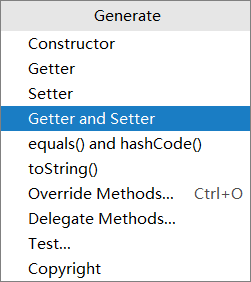
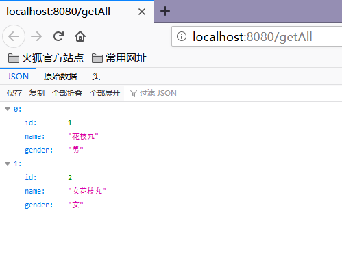
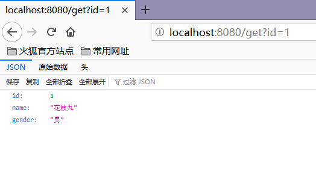
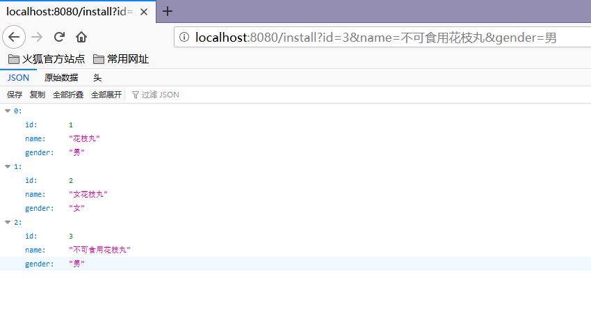
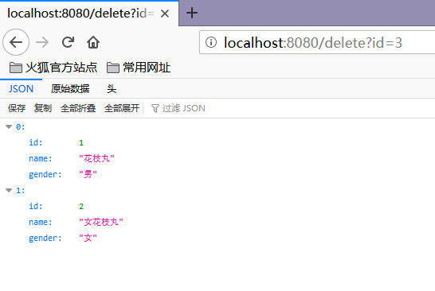
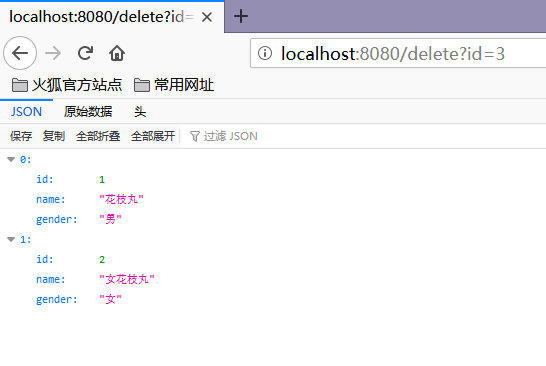

第一次一墩儿用这么多框架，踩了好多雷（嘤嘤嘤，哭唧唧
！步入正题！
超级框架大糅合！！！
前排提醒：本文中所有的代码不要无脑复制！中文方括号的内容要根据个人情况酌情修改！
1.准备工作
再次打开万恶的IDEA
建立数据库
这次需要用到MySQL数据库，这里使用了SQLyog
我们已经建好了一个表user，包含字段id(int)，name(varchar(32))，gender(varchar(1))，编码使用UTF8
搭建SpringBoot框架，添加Mybatis依赖
我们可以在创建工程时勾选
也可以在pom.xml中添加依赖
<!-- MyBatis -->
<dependency>
<groupId>org.mybatis.spring.boot</groupId>
<artifactId>mybatis-spring-boot-starter</artifactId>
<version>【这里可以控制版本，建议遵循官网】</version>
<!-- MySQL -->
<dependency>
<groupId>mysql</groupId>
<artifactId>mysql-connector-java</artifactId>
<version>【这里可以控制版本，建议也遵循官网】</version>
</dependency>
链接你的数据库！
数据库有两种链接方法，可以通过xml文件进行链接，也可以通过配置application.properties文件进行链接。这里我们选择后者（因为前面那个我搞坏了....
打开resources\application.properties，添加如下语句来链接SQL
spring.datasource.url=jdbc:mysql://localhost:【3306】/【表所在的库】?useUnicode=true&characterEncoding=UTF-8&serverTimezone=Asia/Shanghai spring.datasource.username=【你的用户名(一般是root)】 spring.datasource.password=【你的密码】 spring.datasource.driver-class-name=com.mysql.cj.jdbc.Driver mybatis.type-aliases-package=【你的Mapper包名】
这里分开解释一下各个值的含义：
spring.datasource.url ：
数据库链接字符串，默认端口号为3306(有些手贱的可能会改过，这里温馨提示)，后面都是字面意思
值得注意的是，serverTimezone=Asia/Shanghai这句话用于选择时区，在6、7、8(大概？)的版本下会由于时区问题出现乱码Bug，可用这段代码解决(当然也可以用老版本)
spring.datasource.driver-class-name ：
驱动类型 老版本中可能需要填入 oracle.jdbc.driver.OracleDriver
mybatis.type-aliases-package ：
Mapper包名，这个可以暂时空缺，到后面我会补上
（对于小白可能会害怕这里没有成功链接数据库，在这里我要不负责任的告诉大家，好像真的没有反馈，我也不知道连不连得成功....
2.编写程序
我们进行三步走：实体类、Mapper接口、控制类
a.实体类
新建一个entity包，写入User类
package 【你的大包儿名儿，一般是自动填写啦】.entity;
public class User {
private int id;
private String name;
private String gender;
public int getId() {
return id;
}
public void setId(int id) {
this.id = id;
}
public String getName() {
return name;
}
public void setName(String name) {
this.name = name;
}
public String getGender() {
return gender;
}
public void setGender(String gender) {
this.gender = gender;
}
}
温馨提示：IDEA可以自动填写Getter和Setter，在空白处右键，点击Generate，点击Getter and Setter 并选中所有即可轻松完成~
 b.Mapper接口
新建一个Mapper包，写入接口XxxMapper来实现最基本的增删改查
（其实这里也有两种解决方案，可以不使用Java程序而使用XML来代替接口，但是我失败了....所以暂时不做研究
package 【还记得之前空缺的包名吗？创建好UserMapper接口，自动生成在这个位置下的代码，粘到前面就好~】;
【这里有好多import，可以用IDEA的 alt+enter 自动补全，当然，手敲下面的代码是不会爆红的....】
@Repository
public interface UserMapper {
@Select("SELECT * FROM user")
@Results({
@Result(property = "name", column = "name")
})
List<User> getAll();
@Select("select * from user where id=#{id}")
User getById(int id);
@Insert({"insert into user(id,name,gender) values(#{id},#{name},#{gender})"})
void install(User user);
@Update({"update user set name=#{name},gender=#{gender} where id=#{id}"})
void Update(User user);
@Delete("delete from user where id=#{id}")
void delete(int id);
}
上段代码值得反复研读
@Select 查询注解
@Insert 插入注解
@Update 修改注解
@Delete 删除注解
@Result 结果集标识，用来对应数据库列名的，实体类属性和数据库属性名保持一致时可忽略此参数
完成以后，我们在主程序的类外添加一个注解
@MapperScan("【你的Mapper包名】")
也可以直接在Mapper类上面添加注解@Mapper，但这种方式要求每一个mapper类都需要添加此注解，很麻烦。通过使用@MapperScan可以指定要扫描的Mapper类的包的路径,
c.控制类
习惯上，我们可以建立一个web包，新建一个XxxController类来完成最后的访问
package 【你的大包儿名儿，一般是自动填写啦】.web;
【这里也有好多import】
@RestController
public class UserController {
private final UserMapper userMapper;//注意这里实例化了一个userMapper，后文变为小写
public UserController(UserMapper userMapper) {this.userMapper = userMapper;}
//查找所有
@GetMapping("/getAll")
public List<User> getAll(){
return userMapper.getAll();
}
//插入
@GetMapping("/install")
public List<User> install(User user){
userMapper.install(user);
return userMapper.getAll();
}
//删除
@GetMapping("/delete")
public List<User> delete(int id){
userMapper.delete(id);
return userMapper.getAll();
}
//更改
@GetMapping("/update")
public List<User> update(User user){
userMapper.Update(user);
return userMapper.getAll();
}
//根据ID查单条
@GetMapping("/get")
public User get(int id){
return userMapper.getById(id);
}
}
到这里，所有的敲敲敲步骤都算是完成了！
3.快乐测试！
查询所有： localhost:8080/getAll 查询单条： localhost:8080/get?id=1 增加数据： localhost:8080/install?id=3&name=不可食用花枝丸&gender=男 删除数据： localhost:8080/delete?id=1 修改数据： localhost:8080/update?id=3&name=可食用花枝丸&gender=女
运行结果如图
   
